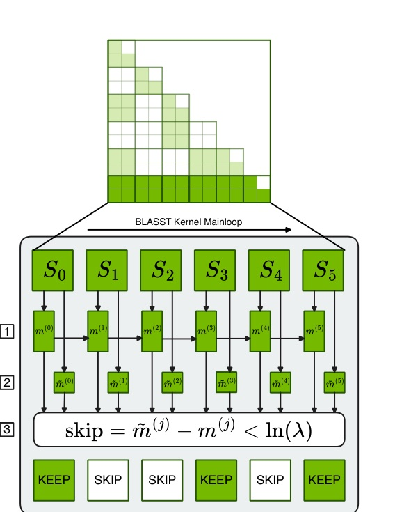
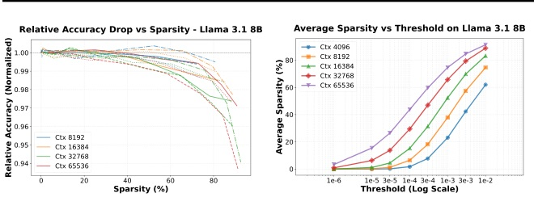
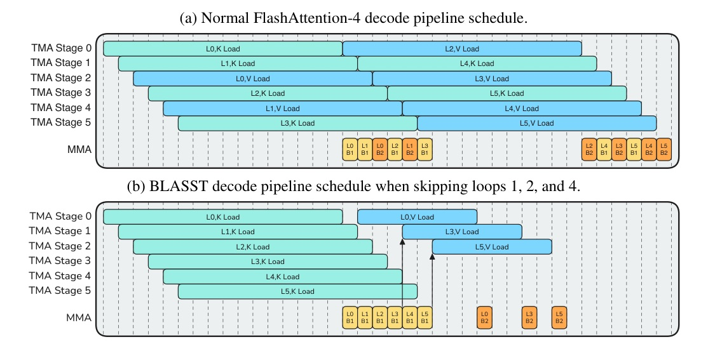
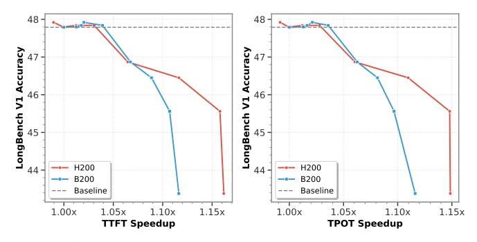

BLASST: Dynamic BLocked Attention Sparsity via Softmax Thresholding
A drop-in sparse attention gate that reuses FlashAttention online-softmax statistics to skip negligible blocks in both prefill and decode.
BLASST turns a numerical-stability statistic into a production sparsity gate.
FlashAttention optimizes dense attention, but still computes all tiles
- Long context makes attention the deployment bottleneck. Qwen3/DeepSeek-style 128K+ context pushes quadratic work into latency and memory pressure.
- Tiling/fusion do not remove quadratic structure. FlashAttention improves memory behavior but leaves the full attention matrix computed.
- Most sparse methods carry adoption tax. Pre-computation, training/new layers, single-phase scope, unclear Blackwell/Hopper kernels, or intrusive APIs.
The adoption filter: both phases, no training, no pre-compute
| Method | Prefill | Decode | No training | No pre-compute |
|---|---|---|---|---|
| H2O | no | yes | yes | yes |
| DuoAttention | yes | yes | no | yes |
| MInference | yes | no | yes | no |
| XAttention | yes | no | yes | no |
| SpargeAttention | yes | no | yes | no |
| BLASST | yes | yes | yes | yes |
Table condensed from the paper feature comparison; it explains why BLASST is framed as a deployment method, not just an accuracy-preserving sparsifier.
A tile is skipped when local max cannot matter after softmax

- For each row tile, FlashAttention already has a running max m_i^(j).
- Each score tile has a local max m~_i^(j).
- If m~_i^(j) - m_i^(j) is below ln(lambda), every post-softmax score in the tile is bounded by lambda.
- Decision cost is a scalar comparison at block granularity.
The skip happens before the expensive post-score path
- Compute score tile Sij = QiKjT as usual.
- Compute local row max m~i(j) and update running max mi(j).
- If the tile fails the threshold, continue: no exp, no row-sum reduction, no PV update.
- Otherwise compute normalized tile weights and accumulate output.
Prefill and decode skip different bottlenecks
Prefill: compute-bound
- Skip expensive exp / FMUL / FADD and row-sum reduction.
- Skip attention-value MMA (BMM2) for pruned tiles.
- Keep V prefetching because memory bandwidth is not the bottleneck in the current design.
Decode: memory-bound
- Skip loading V tiles from KV cache for pruned blocks.
- Batch K-side products first, then issue only surviving V loads.
- For MLA-like compute-bound decode, also skip softmax work.
Accuracy is mostly a function of observed sparsity

- The paper normalizes each curve by dense attention to compare degradation patterns.
- A fixed threshold cannot be the production knob: 75% sparsity needs about 1e-4 at 8K but 1e-5 at 64K.
Control target sparsity, not lambda.
Skip logic is deliberately small enough to hide
- The decision path adds only a thread predicate, a VOTE instruction, and one ATOMIC to shared memory per warp for block-level coordination.
- The kernel keeps the FlashAttention structure and reuses local/running maxima computed for online softmax.
- This is why the 0% sparsity case stays near baseline: 0.96-1.00x in Table 5.
Compute-bound: skip softmax and BMM2, compress the schedule

Memory-bound: batch the skip checks before loading V

The benchmark suite checks both long-context retrieval and reasoning
Models / systems
- Llama-3.1-8B-Instruct and Qwen3-8B-Instruct; appendix includes DeepSeek-R1 MLA and larger variants.
- CUDA kernels integrated into TensorRT-LLM and FlashInfer.
- Blackwell B200 and Hopper H200 kernel benchmarks.
Benchmarks / baselines
- RULER and LongBench v2 for long-context behavior.
- MATH500, AIME 2024, GPQA, LiveCodeBench for reasoning/generation.
- Prefill baselines: MInference, FlexPrefill, XAttention; decode baselines: Quest, RocketKV.
75% target sparsity keeps most task scores near dense
| Model / phase | RULER-32K | LongBench | MATH500 | AIME 2024 | GPQA |
|---|---|---|---|---|---|
| Llama dense | 92.33 | 31.40 | 73.40 | 46.66 | 46.71 |
| Llama 75% | 91.67 | 31.80 | 73.89 | 46.01 | 45.95 |
| Qwen dense | 91.90 | 33.60 | 95.87 | 75.00 | 61.21 |
| Qwen 75% | 91.74 | 33.10 | 96.07 | 75.33 | 61.51 |
Target sparsity denotes configured target; achieved sparsity varies by phase/context.
BLASST is the best sparse method in the paper prefill table
| Method | RULER avg | LongBench overall |
|---|---|---|
| Dense Attention | 93.21 | 31.4 |
| FlexPrefill | 87.72 | 25.7 |
| MInference | 84.15 | 31.2 |
| XAttention | 92.44 | 30.6 |
| BLASST (~50%) | 92.87 | 31.8 |
Decode sparsity does not break reasoning tasks at 50% target
| Method | RULER-32K | MATH500 | AIME | LiveCode | GPQA | Avg |
|---|---|---|---|---|---|---|
| Dense | 91.90 | 95.87 | 75.00 | 53.83 | 61.21 | 68.57 |
| Quest | 56.23 | 94.18 | 71.50 | 52.17 | 60.12 | 60.75 |
| RocketKV | 87.89 | 95.88 | 73.54 | 53.10 | 60.50 | 66.91 |
| BLASST ~50% | 91.55 | 96.23 | 76.50 | 54.15 | 61.51 | 68.97 |
Measured speedup scales with achieved sparsity
| Phase / GPU | ~50-60% sparsity | ~70-73% sparsity | ~80%+ sparsity |
|---|---|---|---|
| B200 prefill | 1.33x @ 49.2% | 1.52x @ 71.9% | 1.61x @ 80.8% |
| H200 prefill | 1.27x @ 49.2% | 1.52x @ 71.0% | 1.64x @ 79.5% |
| B200 decode | 1.34x @ 61.2% | 1.48x @ 73.2% | 1.64x @ 82.6% |
| H200 decode | 1.31x @ 59.4% | 1.40x @ 70.5% | 1.47x @ 78.4% |
All speedups are versus FlashAttention-3 BF16 baselines; prefill uses BS=1, 64K sequence length.
Production-style runs show TTFT/TPOT gains before accuracy cliff

- Both H200 and B200 show a usable region around ~1.1x TTFT/TPOT speedup with only marginal LongBench V1 accuracy loss.
- The steep drop at higher speedup is the practical reminder: target sparsity is an SLO knob, not a free constant.
BLASST works because the skip criterion is tied to actual softmax mass, not a proxy importance score.
Fixed threshold is unstable across context lengths
| Target / method | 4K | 8K | 16K | 32K | 64K |
|---|---|---|---|---|---|
| 50% fixed lambda=1e-3 | 23.09 | 37.92 | 52.38 | 65.72 | 74.63 |
| 50% calibrated lambda=a/L | 54.20 | 49.70 | 52.20 | 46.96 | 48.75 |
| 70% fixed lambda=3e-3 | 42.35 | 57.54 | 69.83 | 79.36 | 84.63 |
| 70% calibrated lambda=a/L | 67.99 | 74.65 | 73.64 | 72.54 | 74.63 |
BLASST can stack with other sparsity methods and still helps at 200K
Composable with other methods
| Prefill + Decode | RULER | LongBench |
|---|---|---|
| Dense + Dense | 93.22 | 29.4 |
| XAttention + BLASST | 92.89 | 28.8 |
| BLASST + RocketKV | 92.60 | 29.4 |
RepoQA 200K
| Mode | P sparsity | D sparsity | Acc |
|---|---|---|---|
| Dense | 0% | 0% | 0.850 |
| BLASST prefill | 57.5% | 0% | 0.841 |
| Prefill+Decode | 57.5% | 40.8% | 0.838 |
The method is practical, but not magic
- QK/BMM1 still runs. BLASST skips post-score work, not score computation itself.
- Prefill V loads stay. Current prefill design is compute-bound, so conditional V loading would cost more than it saves.
- Calibration is mandatory. Fixed thresholds can swing sparsity by 50 percentage points across lengths.
- Aggressive sparsity eventually hurts. The stable band is roughly 60-70%; beyond that, accuracy falls sharply.
- Decode batching spends shared memory. It stores multiple small score buffers to avoid V-load bubbles.
Why an inference engineer should care
- API surface is tiny: one scalar threshold / target sparsity path is easier to ship than a new sparse attention architecture.
- Kernel economics are phase-aware: prefill and decode are not optimized by the same skip.
- Accuracy knob maps to cost knob: observed sparsity predicts speedup and degradation better than raw lambda.
- Best deployment fit: long-context serving where attention mass is naturally concentrated and dense KV traffic dominates.
Paper claim in its own words
BLASST eliminates training requirements, avoids expensive pre-computation passes, accelerates both prefill and decode across all major attention variants (MHA, GQA, MQA, and MLA)...
BLASST 不需要訓練、不需要昂貴預先計算，並能加速 MHA/GQA/MQA/MLA 的 prefill 與 decode。Abstract p.1 lines 12-18
Preserving benchmark accuracy, we demonstrate a 1.52x speedup for prefill at 71.9% sparsity and a 1.48x speedup for decode at 73.2% sparsity on modern GPUs.
在保留 benchmark 準確率下，現代 GPU 上 prefill 於 71.9% sparsity 達 1.52x，decode 於 73.2% sparsity 達 1.48x。Abstract p.1 lines 19-22
The two essential mechanisms
if a block's local maximum score is significantly smaller than this running maximum... its post-softmax values will be near zero after normalization.
若某 block 的 local max 比 running max 低很多，softmax normalization 後貢獻接近零，因此可跳過。Section 1 p.2 lines 102-113
accuracy remains stable up to ~60-70% sparsity, beyond which accuracy drops sharply.
準確率大致可穩到 60-70% sparsity，之後才急遽下降。Section 3.2 p.4 lines 476-485
This reordering allows us to issue a batch of loads for only Vj tiles that pass the threshold check... Figure 4a takes 38 time units... Figure 4b takes 31 units.
decode kernel 以批次 load scheduling 只載入通過 threshold 的 V tile，將 V-load 完成時間從 38 降到 31 time units。Section 4.2 p.7 lines 865-880
Tomorrow: model compression / efficiency
Quantization, distillation, pruning, and the systems details that decide whether they actually save latency.